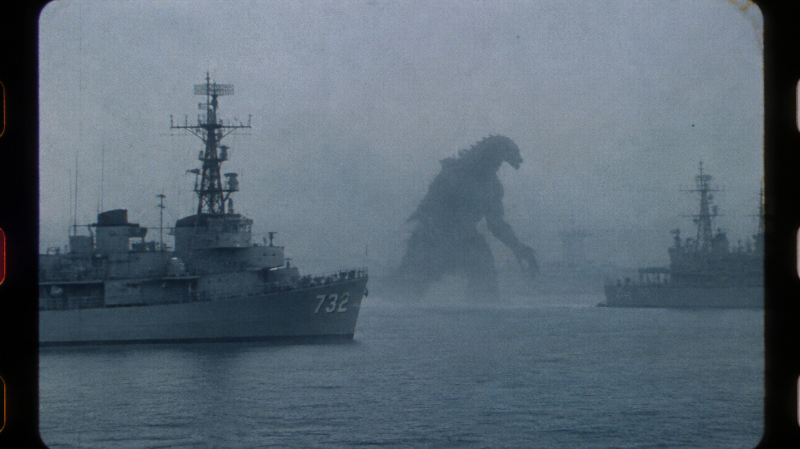

Lost Futures production board — ownable franchise lanes
Concept stills for the top production-board lanes, all as ownable properties (IP cousins, not the
direct-IP remixes). GPT Image 2.5 Flare, 0 credits, 2026-09-21. Files in creative/concepts-lostfutures/.
Three lanes (Block Mission, Curriculum Breach, Inner Voltage) hit the late-day promo-route degradation — retry queued for
when the generation pool recovers.

MAGNITUDE — 1966 analog military kaiju observation reel, 16mm Ektachrome archive